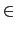
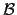
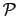
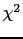

suivant:
Probabilité que X égale
monter:
Les fonctions de statistique
précédent:
Matrice aléatoire : ranm
Table des matières
Index
Les fonctions de répartition et leurs inverses
Sous-sections
Probabilité que
X
égale
k
lorsque
X
 (
n
,
p
) :
binomial
Fonction de répartition de la loi binomiale :
binomial_cdf
Fonction de répartition inverse binomiale :
binomial_icdf
Probabilité pour que
X
égale
k
lorsque
X
(
) :
poisson
Fonction de répartition de Poisson :
poisson_cdf
Fonction de répartition inverse de Poisson :
poisson_icdf
Densité de probabilité de la loi normale :
normald
Fonction de répartition de la loi normale :
normal_cdf normald_cdf
Fonction de répartition inverse normale :
normal_icdf normald_icdf
Complément à 1 de la fonction de répartition de la loi normale :
UTPN
Densité de probabilité de la loi de Student :
student
Fonction de répartition de la loi de Student :
student_cdf
Fonction de répartition inverse de Student :
student_icdf
Complément à 1 de la fonction de répartition de la loi de Student :
UTPT
Densité de probabilité de la loi du  :
chisquare
Fonction de répartition de la loi du :
chisquare_cdf
Fonction inverse de la fonction de répartition de la loi du :
chisquare_icdf
Complément à 1 de la fonction de répartition de la loi du :
UTPC
Densité de probabilité de la loi de Fisher-Snédécor :
fisher snedecor
La fonction de répartition de la loi de Fisher-Snédécor :
fisher_cdf snedecor_cdf
Inverse de la fonction de répartition de la loi de Fisher-Snédécor :
fisher_icdf snedecor_icdf
Complément à 1 de la fonction de répartition de la loi de Fisher-Snédécor :
UTPF
Documentation de
giac
écrite par Renée De Graeve